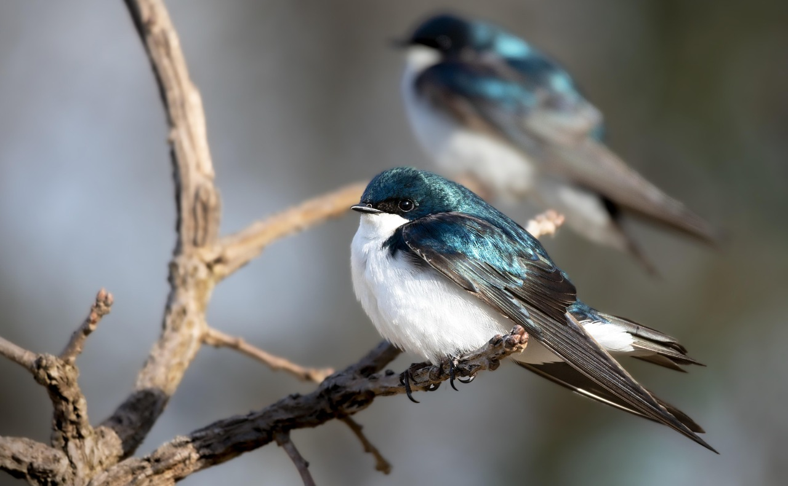
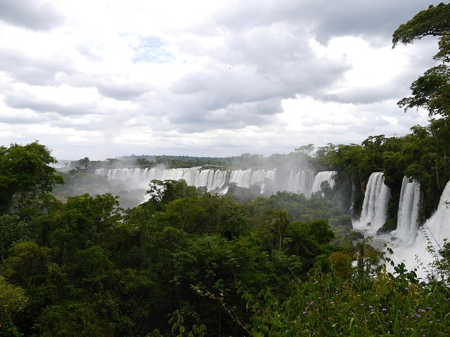
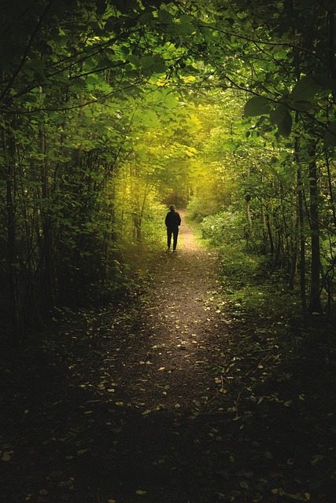

Audios
La belleza alada de la naturaleza
En esta imagen, un grupo de aves nos recuerda la armonía y libertad que habita en los paisajes naturales. Su presencia es símbolo de ecosistemas saludables y nos invita a valorar y proteger el entorno que compartimos con tantas especies maravillosas.
Iguazú: el rugido majestuoso del agua
Las Cataratas del Iguazú, una de las maravillas naturales del mundo, nos asombran con su imponente fuerza y belleza. Rodeadas de exuberante selva tropical, estas caídas de agua son un testimonio del poder y la majestuosidad de la naturaleza en su estado más puro.
Susurros del bosque
En lo profundo del bosque, la naturaleza se expresa en cada hoja, tronco y rayo de luz que se filtra entre los árboles. Este ecosistema es hogar de innumerables formas de vida y un refugio de paz que nos conecta con lo esencial.